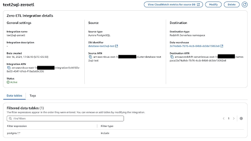
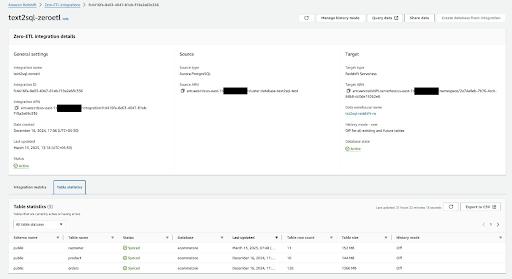
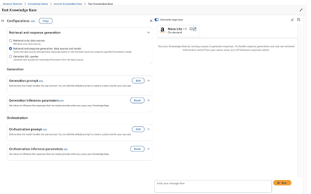

Blog 1
⚠️ Lưu ý: Các thông tin dưới đây chỉ nhằm mục đích tham khảo, vui lòng không sao chép nguyên văn cho bài báo cáo của bạn kể cả warning này.
Truy vấn Amazon Aurora PostgreSQL bằng cách sử dụng Amazon Bedrock Knowledge Bases với dữ liệu có cấu trúc
Amazon Bedrock Knowledge Bases cung cấp tính năng Retrieval Augmented Generation (RAG) được quản lý hoàn toàn, cho phép kết nối Large Language Models (LLMs) với các nguồn dữ liệu nội bộ.Tính năng này giúp cải thiện đầu ra của Foundation Models (FMs) bằng cách bổ sung ngữ cảnh từ dữ liệu riêng tư, làm cho phản hồi trở nên chính xác và phù hợp hơn.
Tại AWS re:Invent 2024, AWS công bố rằng Amazon Bedrock Knowledge Bases hiện hỗ trợ truy vấn ngôn ngữ tự nhiên (natural language querying) để truy xuất dữ liệu có cấu trúc (structured data) từ Amazon Redshift và Amazon SageMaker Lakehouse. Tính năng này mang đến một quy trình quản lý đầy đủ để xây dựng các ứng dụng Generative AI có khả năng truy cập và tích hợp thông tin từ cả nguồn dữ liệu có cấu trúc và phi cấu trúc. Bằng cách sử dụng Natural Language Processing (NLP), Amazon Bedrock Knowledge Bases có thể chuyển đổi truy vấn ngôn ngữ tự nhiên thành câu lệnh SQL, cho phép người dùng truy xuất dữ liệu trực tiếp từ các nguồn được hỗ trợ mà không cần hiểu cấu trúc cơ sở dữ liệu hay cú pháp SQL.
Bài viết này sẽ hướng dẫn cách làm cho dữ liệu trong Amazon Aurora PostgreSQL-Compatible Edition có thể được truy vấn bằng ngôn ngữ tự nhiên thông qua Amazon Bedrock Knowledge Bases, đồng thời duy trì tính cập nhật của dữ liệu (data freshness).
Structured data retrieval trong Amazon Bedrock Knowledge Bases và Amazon Redshift Zero-ETL
Structured data retrieval trong Amazon Bedrock Knowledge Bases cho phép tương tác bằng natural language với database của bạn bằng cách convert các user queries thành các SQL statements. Khi bạn connect một supported data source như Amazon Redshift, Amazon Bedrock Knowledge Bases sẽ analyze database schema, table relationships, query engine, và các historical queries để hiểu context và structure của thông tin của bạn. Hiểu biết này cho phép service tạo ra các SQL queries chính xác từ các natural language questions.
Tại thời điểm viết bài, Amazon Bedrock Knowledge Bases hỗ trợ structured data retrieval trực tiếp từ Amazon Redshift và SageMaker Lakehouse. Mặc dù direct support cho Aurora PostgreSQL-Compatible hiện tại chưa có, bạn có thể sử dụng zero-ETL integration giữa Aurora PostgreSQL-Compatible và Amazon Redshift để làm cho dữ liệu của bạn có thể truy cập được bởi Amazon Bedrock Knowledge Bases structured data retrieval. Zero-ETL integration tự động replicate các Aurora PostgreSQL tables sang Amazon Redshift gần như trong thời gian thực, giúp alleviate nhu cầu về các complex extract, transform, and load (ETL) pipelines hoặc các data movement processes.
Architectural pattern này đặc biệt có giá trị cho các tổ chức muốn enable natural language querying đối với structured application data được lưu trữ trong các Amazon Aurora database tables. Bằng cách kết hợp zero-ETL integration với Amazon Bedrock Knowledge Bases, bạn có thể tạo ra các powerful applications như AI assistants sử dụng LLMs để cung cấp natural language responses dựa trên operational data của họ.
Solution overview
Sơ đồ sau minh họa architecture mà chúng ta sẽ triển khai để connect Aurora PostgreSQL-Compatible với Amazon Bedrock Knowledge Bases sử dụng zero-ETL.

Workflow bao gồm các bước sau: Dữ liệu được lưu trữ trong Aurora PostgreSQL-Compatible bên trong private subnet. Chúng tôi sử dụng bastion host để connect securely đến database từ public subnet.
Sử dụng zero-ETL integration, dữ liệu này được đưa vào Amazon Redshift, cũng nằm trong private subnet.
Amazon Bedrock Knowledge Bases sử dụng Amazon Redshift làm structured data source.
Người dùng có thể tương tác với Amazon Bedrock Knowledge Bases thông qua AWS Management Console hoặc AWS SDK client, gửi các natural language queries. Các queries này được processed bởi Amazon Bedrock Knowledge Bases để retrieve information được lưu trữ trong Amazon Redshift (nguồn từ Aurora).
Prerequisites
Đảm bảo bạn đã logged in với user role có quyền để: Tạo một Aurora database, chạy các DDL (CREATE, ALTER, DROP, RENAME) và DML (SELECT, INSERT, UPDATE, DELETE) statements
Tạo một Redshift database
Thiết lập zero-ETL integration
Tạo một Amazon Bedrock knowledge base
Thiết lập Aurora PostgreSQL database
Trong phần này, chúng ta sẽ đi qua việc tạo và cấu hình một Aurora PostgreSQL database với một sample schema để minh họa cho bài hướng dẫn. Chúng ta sẽ tạo ba bảng liên kết với nhau: products, customers, và orders.
Provision the database
Trong phần này, chúng ta sẽ đi qua việc tạo và cấu hình một Aurora PostgreSQL database với một sample schema để minh họa cho bài hướng dẫn. Chúng ta sẽ tạo ba bảng liên kết với nhau: products, customers, và orders. Provision the database Bắt đầu bằng việc thiết lập môi trường database. Tạo một Aurora PostgreSQL database cluster mới và khởi chạy một Amazon Elastic Compute Cloud (Amazon EC2) instance để làm điểm truy cập quản lý database. EC2 instance sẽ giúp tạo bảng và quản lý dữ liệu một cách thuận tiện trong suốt bài hướng dẫn này. Hình screenshot sau đây hiển thị chi tiết của database cluster và EC2 instance. 
Để được hướng dẫn thiết lập database của bạn, tham khảo Creating and connecting to an Aurora PostgreSQL DB cluster. Tạo database schema Sau khi bạn kết nối đến database bằng SSH trên EC2 instance của mình (được mô tả trong Creating and connecting to an Aurora PostgreSQL DB cluster), đã đến lúc tạo cấu trúc dữ liệu. Chúng ta sẽ sử dụng các DDL statements sau để tạo ba bảng: – Create Product table CREATE TABLE product ( product_id SERIAL PRIMARY KEY, product_name VARCHAR(100) NOT NULL, price DECIMAL(10, 2) NOT NULL );
– Create Customer table CREATE TABLE customer ( customer_id SERIAL PRIMARY KEY, customer_name VARCHAR(100) NOT NULL, pincode VARCHAR(10) NOT NULL );
– Create Orders table CREATE TABLE orders ( order_id SERIAL PRIMARY KEY, product_id INTEGER NOT NULL, customer_id INTEGER NOT NULL, FOREIGN KEY (product_id) REFERENCES product(product_id), FOREIGN KEY (customer_id) REFERENCES customer(customer_id) );
Điền dữ liệu vào các bảng
Sau khi tạo các bảng, bạn có thể điền dữ liệu mẫu vào chúng. Khi chèn dữ liệu vào bảng orders, hãy nhớ duy trì referential integrity bằng cách kiểm tra: product_id tồn tại trong bảng product và customer_id tồn tại trong bảng customer.
Ví dụ mã để điền dữ liệu vào các bảng như sau:
INSERT INTO product (product_id, product_name, price) VALUES (1, ‘Smartphone X’, 699.99); INSERT INTO product (product_id, product_name, price) VALUES (2, ‘Laptop Pro’, 1299.99); INSERT INTO product (product_id, product_name, price) VALUES (3, ‘Wireless Earbuds’, 129.99); INSERT INTO customer (customer_id, customer_name, pincode) VALUES (1, ‘John Doe’, ‘12345’); INSERT INTO customer (customer_id, customer_name, pincode) VALUES (2, ‘Jane Smith’, ‘23456’); INSERT INTO customer (customer_id, customer_name, pincode) VALUES (3, ‘Robert Johnson’, ‘34567’); INSERT INTO orders (order_id, product_id, customer_id) VALUES (1, 1, 1); INSERT INTO orders (order_id, product_id, customer_id) VALUES (2, 1, 2); INSERT INTO orders (order_id, product_id, customer_id) VALUES (3, 2, 3); INSERT INTO orders (order_id, product_id, customer_id) VALUES (4, 2, 1); INSERT INTO orders (order_id, product_id, customer_id) VALUES (5, 3, 2); INSERT INTO orders (order_id, product_id, customer_id) VALUES (6, 3, 3);
Hãy đảm bảo duy trì referential integrity khi điền dữ liệu vào bảng orders để tránh vi phạm foreign key constraint.
Bạn cũng có thể sử dụng các ví dụ tương tự để xây dựng schema và điền dữ liệu cho các bảng khác.
Staging ER7 microservice
- Lambda “trigger” đăng ký với pub/sub hub, lọc message theo attribute
- Step Functions Express Workflow để chuyển ER7 → JSON
- Hai Lambda:
- Sửa format ER7 (newline, carriage return)
- Parsing logic
- Kết quả hoặc lỗi được đẩy lại vào pub/sub hub
Thiết lập Redshift cluster và cấu hình zero-ETL
Sau khi thiết lập xong Aurora PostgreSQL database, bạn có thể thiết lập zero-ETL integration với Amazon Redshift. Tích hợp này tự động đồng bộ dữ liệu giữa Aurora PostgreSQL-Compatible và Amazon Redshift.
Thiết lập Amazon Redshift
Trước tiên, tạo một Amazon Redshift Serverless workgroup và namespace. Tham khảo hướng dẫn tại Creating a data warehouse with Amazon Redshift Serverless.
Tạo zero-ETL integration
Quy trình zero-ETL integration bao gồm hai bước chính:
1.Tạo zero-ETL integration từ Aurora PostgreSQL database sang Redshift Serverless. 2.Sau khi thiết lập tích hợp trên Aurora, tạo mapping database tương ứng trong Amazon Redshift. Bước này quan trọng để đảm bảo đồng bộ dữ liệu chính xác giữa hai dịch vụ.
Ảnh chụp màn hình sau minh họa chi tiết về zero-ETL integration của chúng tôi. 
Xác minh tích hợp
Sau khi hoàn thành việc tích hợp, bạn có thể xác minh thành công của nó thông qua một số kiểm tra.
Trước hết, bạn có thể kiểm tra chi tiết zero-ETL integration trong Amazon Redshift console. Bạn sẽ thấy trạng thái Active cho tích hợp của mình, cùng với thông tin nguồn (source) và đích (destination), như được hiển thị trong screenshot sau.
 Ngoài ra, bạn có thể sử dụng Redshift Query Editor v2 để xác minh rằng dữ liệu của bạn đã được populate thành công. Một truy vấn đơn giản như SELECT * FROM customer; sẽ trả về dữ liệu đã được đồng bộ từ Aurora PostgreSQL database của bạn, như được hiển thị trong screenshot sau.
Ngoài ra, bạn có thể sử dụng Redshift Query Editor v2 để xác minh rằng dữ liệu của bạn đã được populate thành công. Một truy vấn đơn giản như SELECT * FROM customer; sẽ trả về dữ liệu đã được đồng bộ từ Aurora PostgreSQL database của bạn, như được hiển thị trong screenshot sau.

Thiết lập Amazon Bedrock knowledge base với structured data
Bước cuối cùng là tạo một Amazon Bedrock knowledge base, cho phép truy vấn dữ liệu bằng natural language.
Tạo Amazon Bedrock knowledge base
Tạo một Amazon Bedrock knowledge base mới với tùy chọn structured data. Để biết hướng dẫn, xem Build a knowledge base by connecting to a structured data store. Sau đó, bạn phải đồng bộ query engine để cho phép truy cập dữ liệu.
Cấu hình quyền truy cập dữ liệu
Trước khi quá trình đồng bộ thành công, bạn cần cấp các quyền thích hợp cho Amazon Bedrock Knowledge Bases AWS Identity and Access Management (IAM) role. Điều này bao gồm việc thực hiện các lệnh GRANT SELECT cho từng bảng trong Redshift database của bạn.
Chạy lệnh sau trong Redshift Query Editor v2 cho mỗi bảng:
GRANT SELECT ON <table_name> TO “IAMR:
Đối với môi trường production, việc tích hợp identity của end-user vào luồng truy cập dữ liệu yêu cầu identity federation. Tham khảo tài liệu AWS về structured database access cho role-based access model. Đối với federating identities từ web clients, có thể cần Amazon Cognito hoặc SAML federation với AWS Security Token Service (AWS STS) tùy thuộc vào kiến trúc của bạn.
Xác minh thiết lập
Sau khi hoàn tất cấu hình, knowledge base của bạn sẽ hiển thị các thông tin sau: Trạng thái là Available
Query engine đã được đồng bộ thành công với Amazon Redshift
Trạng thái COMPLETE cho quá trình đồng bộ database
Bạn giờ có thể bắt đầu truy vấn dữ liệu của mình bằng natural language.
Ví dụ về truy vấn bằng natural language
Khi đã thiết lập xong Amazon Bedrock knowledge base, bạn có thể bắt đầu kiểm tra khả năng của nó bằng cách thực hiện các truy vấn bằng natural language trên dữ liệu có cấu trúc. Structured data trong Amazon Bedrock Knowledge Bases sẽ chuyển đổi các câu hỏi bằng tiếng Anh sang SQL và sử dụng các FMs để tạo phản hồi dễ đọc cho con người.
Bạn có thể kiểm tra Amazon Bedrock knowledge base bằng hai cách:
● Amazon Bedrock console – Trên Amazon Bedrock console, chọn Knowledge Bases trong navigation pane, và chọn knowledge base đã được cấu hình. Mở tab Test để tương tác với dữ liệu của bạn.
● AWS SDK hoặc API – Sử dụng AWS SDK (ví dụ: Boto3 của Python) hoặc gọi trực tiếp RetrieveAndGenerate API để gửi truy vấn theo lập trình.
Trong phần này, chúng tôi minh họa trải nghiệm trên console. Trên Amazon Bedrock console, bạn có thể tương tác với knowledge base theo hai chế độ:
● Generate SQL queries – Tùy chọn này hiển thị câu lệnh SQL thô được tạo ra từ câu hỏi bằng natural language của bạn.

● Retrieval and response generation – Cung cấp phản hồi bằng natural language sử dụng một LLM. Bảng sau đây chứa một số ví dụ về các truy vấn và câu lệnh SQL tương ứng cùng với kết quả phản hồi được tạo bởi model. 
| Truy vấn Natural Language | Generate SQL Output | Kết quả phản hồi | Model |
|---|---|---|---|
| Chúng ta có bao nhiêu khách hàng? | SELECT COUNT(DISTINCT customer_id) AS num_customers FROM public.customer; | We currently have 11 unique customers. | Amazon Nova Lite |
| Những khách hàng nào đã mua nhiều sản phẩm nhất? | SELECT c.“customer_name”, COUNT(o.“product_id”) AS “total_products_purchased” FROM public.customer c INNER JOIN public.orders o ON c.“customer_id” = o.“customer_id” GROUP BY c.“customer_name” ORDER BY “total_products_purchased” DESC; | Based on the data, the customers who have purchased the most products are Charlie Davis, Alice Brown, and John Doe, each having purchased 14 products. Following closely are Jane Smith, Grace Lee, and Bob Johnson, who have each purchased 13 products. Henry Taylor, Frank Miller, and Eva Wilson have each purchased 12 products, while Ivy Anderson has purchased 11 products. | Amazon Nova Lite |
| Những khách hàng nào đã mua nhiều hơn một sản phẩm đắt nhất? | SELECT c.customer_name FROM public.customer c INNER JOIN public.orders o ON c.customer_id = o.customer_id INNER JOIN public.product p ON o.product_id = p.product_id WHERE p.price = (SELECT MAX(price) FROM public.product) GROUP BY c.customer_name HAVING COUNT(DISTINCT o.order_id); | The customers who have purchased more than one number of the most expensive product are Grace Lee, Jane Smith, Alice Brown, and Eva Wilson. | Amazon Nova Micro |
● Retrieval and response generation – Cung cấp phản hồi bằng natural language sử dụng một LLM.
Dọn dẹp
Khi bạn đã sử dụng xong giải pháp này, hãy dọn dẹp các resources mà bạn đã tạo để tránh các chi phí phát sinh liên tục.
Kết luận
Trong bài viết này, chúng tôi đã trình bày cách cho phép truy vấn bằng natural language trên dữ liệu Aurora PostgreSQL sử dụng Amazon Bedrock Knowledge Bases thông qua zero-ETL integration với Amazon Redshift. Chúng tôi đã hướng dẫn cách thiết lập database, cấu hình zero-ETL integration, và thiết lập kết nối knowledge base để truy cập dữ liệu một cách liền mạch. Mặc dù giải pháp này cung cấp một cách hiệu quả để tương tác với dữ liệu bằng natural language, bạn nên xem xét các chi phí lưu trữ bổ sung trong Amazon Redshift khi triển khai kiến trúc này cho trường hợp sử dụng của mình.
Hãy thử nghiệm giải pháp này và chia sẻ phản hồi của bạn trong phần comments.
Về tác giả
 Girish B là Senior Solutions Architect tại AWS India Pvt Ltd, có trụ sở tại Bengaluru. Girish làm việc với nhiều khách hàng ISV để thiết kế và kiến trúc các giải pháp sáng tạo trên AWS.
Girish B là Senior Solutions Architect tại AWS India Pvt Ltd, có trụ sở tại Bengaluru. Girish làm việc với nhiều khách hàng ISV để thiết kế và kiến trúc các giải pháp sáng tạo trên AWS.
 Dani Mitchell là Generative AI Specialist Solutions Architect tại AWS. Cô tập trung vào việc giúp các doanh nghiệp trên toàn thế giới tăng tốc hành trình Generative AI của họ với Amazon Bedrock.
Dani Mitchell là Generative AI Specialist Solutions Architect tại AWS. Cô tập trung vào việc giúp các doanh nghiệp trên toàn thế giới tăng tốc hành trình Generative AI của họ với Amazon Bedrock.